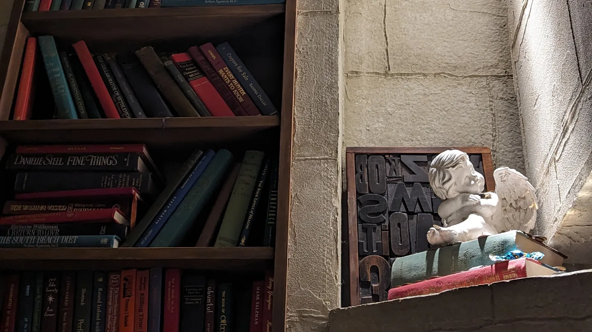
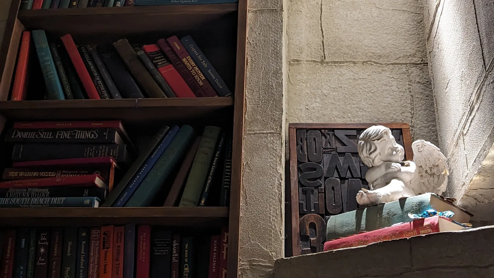

甘未もよく食べに行きます ご飯に比べたら頻度は減りますけど、、、 (;'∀')汗
最近行ったところでお気に入りをご紹介します！
MARKET by MariBelle の秘密のカフェANGEL LIBRARYです。
 

このお店は暗号式の扉なので、CACAO MARKETで暗号をもらってからでないと入店できないです。

すごくリンゴ自体が甘くて、飴もピングで可愛いです(*´ω｀)
初めてリンゴ飴食べましたけど食べやすくておススメです。🍎
お店の前には鯉も居ましたよ～ 写真映え間違えなしです。
伊藤九衛門 祇園四条店です。

お茶はすごく好きですが、抹茶は変に甘くて苦手なんですけど、
伊藤九衛門さんはいい意味で甘くなくて美味しかったです。（お茶に似ているってことです）


京都駅出て右側にあるホテルのAfternoon Teaです。 この写真は2月頃でイチゴのアフタヌーンティーでした。
9月2日現在は、芋栗南瓜アフタヌーンティーが開催されています。
すべて美味しかったので友達同士やカップル、ご家族様でもお楽しみいただけると思います！
ぜひ行ってみてはいかがですか(^^ゞ)